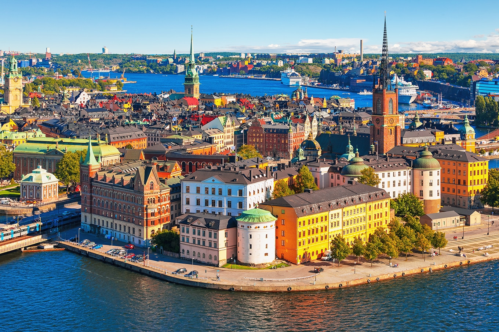

LUGARES TURISTICO
França
A França atraiu cerca de 83 milhões de turistas estrangeiros em 2012, de acordo com a Organização Mundial do Turismo, o que a torna o principal destino turístico do mundo.
Contudo, a França é listada apenas em 3º lugar de receita gerada pelo turismo, isto deve-se ao fato de que 20% mais turistas passam menos da metade do tempo que passam os turistas nos Estados Unidos.
Suiça
É nesse pequeno pedaço da Europa que foram criadas algumas das principais marcas de relógio do mundo, bem como o canivete suíço, com suas diversas funcionalidades.
E não podemos nos esquecer, é claro, dos maravilhosos chocolates e queijos, tradicionais dessa região. Com a bela paisagem dos Alpes e cidades encantadoras, esse país é um ótimo destino
Suecia

Não é à toa que a Suécia é um dos destinos mais visitados da Europa. O destino têm cidades com arquitetura incrível e construções muito antigas, rodeadas por belezas naturais de tirar o fôlego.
A aurora boreal e o sol da meia-noite, por exemplo, são as atrações mais aguardadas pelos turistas. Por isso,
é preciso saber o que pretende ver por lá antes de definir a melhor época para viajar para a Suécia, já que eles acontecem em determinados períodos do ano.
Prepare-se para se aventurar por cenários naturais de tirar o fôlego, e conhecer muita história e construções milenares!